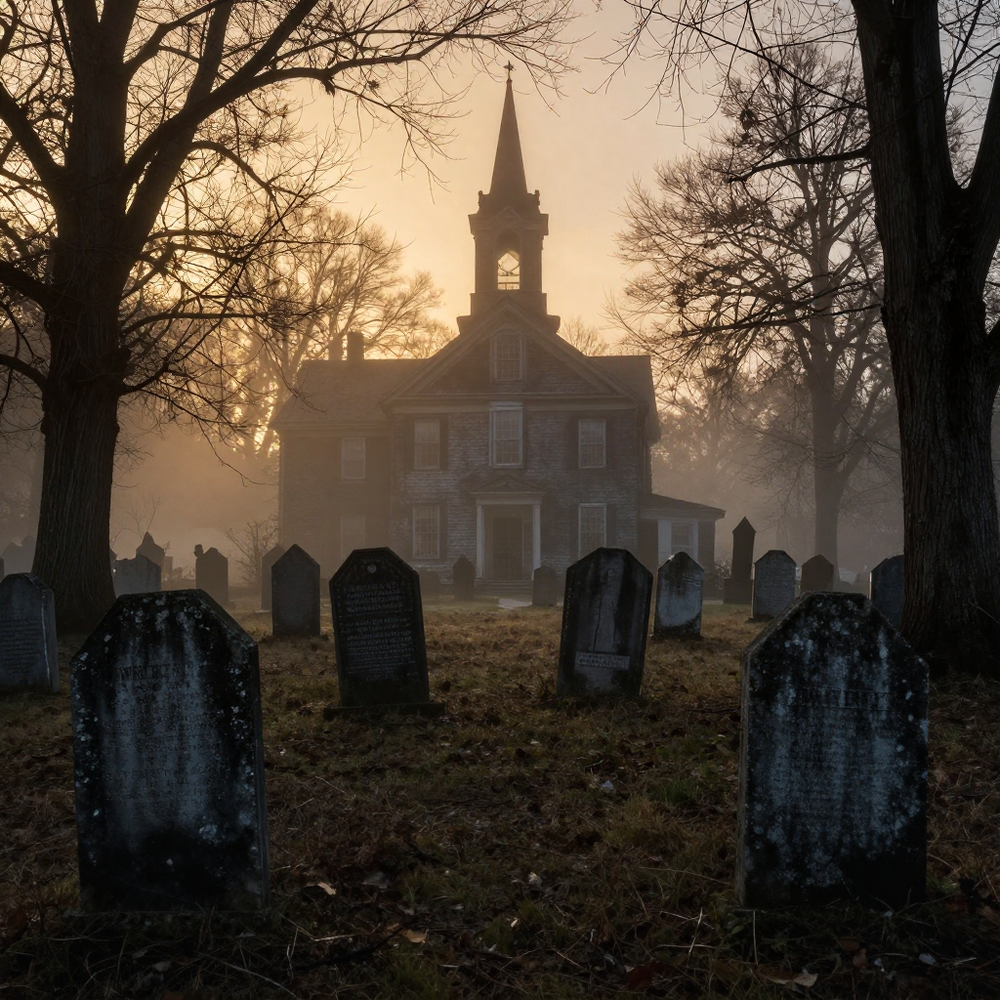
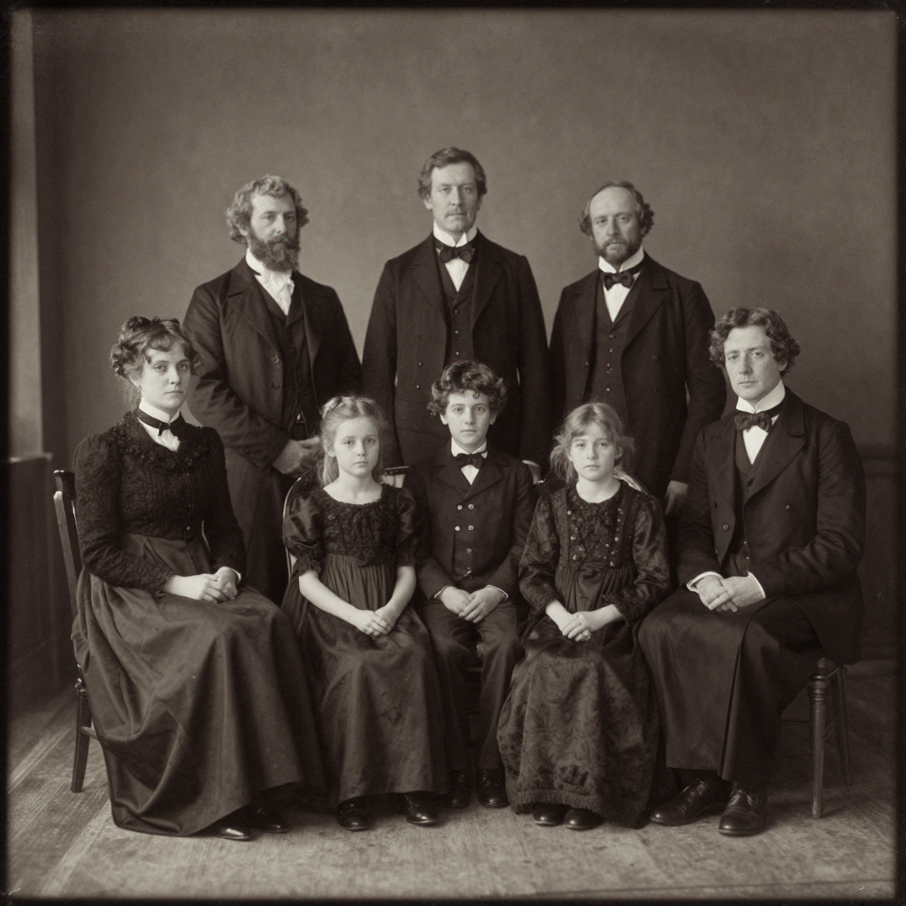
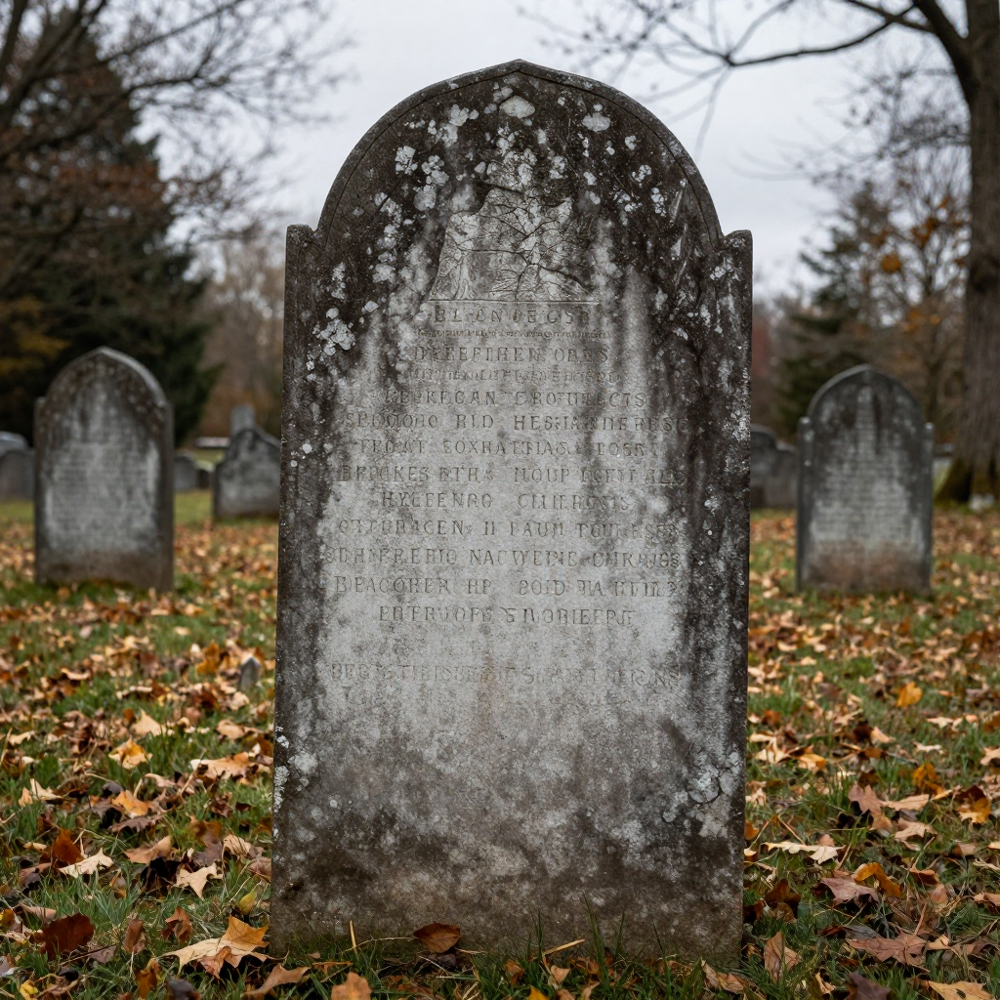

The New England Vampire Panic of 1892

A New England cemetery, similar to where Mercy Brown was laid to rest in 1892.
In the late 1800s, a terrifying disease swept through rural New England. It consumed its victims from within, leaving them pale, weak, and coughing blood. Desperate for answers, communities reached a shocking conclusion: vampires were real, and they were feeding on the living.
The Great White Plague
Tuberculosis, then called "consumption" because of how it seemed to consume its victims, was one of the most feared diseases of the 19th century. In rural farming communities like Exeter, Rhode Island, medical knowledge was limited, and the disease's pattern of infecting entire families seemed supernatural.

Tuberculosis often claimed multiple members of the same family, fueling supernatural fears.
💀 The Vampire Logic
People believed that if a family member died of consumption and others then fell ill, the deceased was rising from the grave to drain life from their relatives!
The Mercy Brown Tragedy
The most famous case occurred in Exeter, Rhode Island in 1892. George Brown's family was devastated by consumption. First, his wife Mary died in 1883. Then his daughter Mary Olive passed away in 1884. By 1892, his daughter Mercy and son Edwin were also sick.
Desperate neighbors convinced George that one of his deceased family members was a vampire causing Edwin's illness. They persuaded him to exhume the bodies. Mary and Mary Olive had decomposed normally, but Mercy's body - she had died in winter and was kept in a cold vault - appeared remarkably preserved.
⚰️ The Gruesome Ritual
Villagers removed Mercy's heart, burned it on a rock, and mixed the ashes into a drink for Edwin. Sadly, he died weeks later despite this desperate attempt.

Mercy Brown's gravestone in Exeter, Rhode Island, still attracts visitors today.
A Widespread Panic
The Mercy Brown incident wasn't isolated. Folklorist Michael Bell has documented nearly 100 exhumations across New England between the 1700s and 1892. Connecticut, Rhode Island, Vermont, and Massachusetts all had cases where bodies were dug up and ritually burned to stop the "vampires."
📚 Dracula Connection
Bram Stoker's "Dracula" was published in 1897, just five years after the Mercy Brown case. Some scholars believe news of New England's "vampires" may have influenced the novel!
The Real Killer Revealed
Of course, there were no vampires. Tuberculosis is a bacterial infection that spreads through close contact - exactly what happened in families living in small, poorly ventilated homes. When one person became ill, others who cared for them often caught the disease too.
🔬 Science Wins
In 1882, just a decade before the Mercy Brown case, Robert Koch discovered the tuberculosis bacterium. The era of germ theory was just beginning to replace supernatural explanations.
The New England Vampire Panic stands as a fascinating example of how fear and lack of scientific understanding can lead communities to extraordinary measures. It reminds us how far medicine has come - and how easily humans can create supernatural explanations for natural phenomena.
Clear Summary for Readers of All Ages
The New England Vampire Panic of 1892 can sound dramatic, but the best way to understand it is to separate strong evidence from speculation. This article is written to be clear enough for younger readers while still useful for adults who want reliable context.
In simple terms, this topic matters because it connects three ideas: what happened, how we know, and what remains uncertain. The core story in The New England Vampire Panic of 1892 is easier to follow when we use a timeline, define key terms, and point directly to sources.
In the late 1800s, a terrifying disease swept through rural New England. It consumed its victims from within, leaving them pale, weak, and coughing blood. Desperate for answers, communities reached a shocking conclusion: vampires were real , and they were feeding on the living.
Background Timeline (What Happened, Step by Step)
- The most famous case occurred in Exeter, Rhode Island in 1892.
- First, his wife Mary died in 1883.
- Then his daughter Mary Olive passed away in 1884.
- By 1892, his daughter Mercy and son Edwin were also sick.
- Folklorist Michael Bell has documented nearly 100 exhumations across New England between the 1700s and 1892.
This timeline view helps younger readers build a mental map, and it helps adult readers evaluate whether later claims fit the documented sequence of events.
What We Know with Strong Support
Across discussions of The New England Vampire Panic of 1892, several points are consistently supported by records or repeatable analysis:
- In the late 1800s, a terrifying disease swept through rural New England.
- It consumed its victims from within, leaving them pale, weak, and coughing blood.
- Desperate for answers, communities reached a shocking conclusion: vampires were real , and they were feeding on the living.
- Tuberculosis, then called "consumption" because of how it seemed to consume its victims, was one of the most feared diseases of the 19th century.
These claims are stronger because they can be checked independently, rather than depending on one dramatic story or one unverified source.
How Researchers Study This Topic
Good history is a method, not just a story. When experts examine The New England Vampire Panic of 1892, they usually combine source criticism, technical analysis, and contextual comparison.
- Historians compare primary records, later retellings, and modern scholarship to reduce errors from repetition.
- A strong interpretation separates what documents clearly show from what is inferred later by commentators.
- Context is essential: social, political, and economic conditions often explain why events looked mysterious at the time.
For readers aged 7+, a simple rule is helpful: if someone makes a big claim, ask, “What is the evidence, and can another expert check it?”
What Experts Still Debate
Even with good evidence, not every question has a final answer. In The New England Vampire Panic of 1892, debates often continue because the surviving data is incomplete, damaged, or interpreted in different ways.
One common source of confusion is mixing the topics of The Great White Plague, The Mercy Brown Tragedy, and A Widespread Panic as if they prove the same thing. In reality, each part of the story may require different standards of proof.
A balanced approach is to keep uncertainty visible: we can confidently state what records show today, while leaving room for future evidence to update the picture.
Myths vs. Evidence
Myth: If a topic is mysterious, experts have no idea what happened.
Evidence-based view: Usually, experts know many parts of the story; the debate is about specific details.
Myth: The most dramatic explanation is probably true.
Evidence-based view: The best explanation is the one that matches the most verifiable facts with the fewest assumptions.
Myth: New claims automatically replace old research.
Evidence-based view: New claims become accepted only after careful checks, replication, and critical review.
Why This Story Still Matters Today
The New England Vampire Panic of 1892 is not only a curiosity from the past. It is also a practical lesson in how people evaluate information. In a world full of fast headlines, this topic reminds us to slow down, check sources, and separate confidence from certainty.
For younger readers, this builds critical-thinking skills. For adult readers, it improves media literacy and historical judgment. In both cases, the goal is the same: understand the past clearly enough to make better decisions in the present.
Mini Glossary (Plain Language)
- Primary source: A record made close to the event, like a report, letter, inscription, or official document.
- Secondary source: A later explanation that interprets primary evidence.
- Hypothesis: A proposed explanation that must be tested against evidence.
- Consensus: The view most experts currently support, knowing it can change with new data.
- Archival record: Stored historical documents such as court files, newspapers, and official correspondence.
- Historical bias: A systematic slant in records due to who wrote them and why.
Quick Recap
If you remember only three things about The New England Vampire Panic of 1892, keep these: (1) there is real evidence worth studying, (2) some questions remain open, and (3) careful source-checking is the best path to reliable understanding.
That combination of curiosity and caution is what turns a mystery into a meaningful history lesson for readers of every age.
Extended Context for Deeper Reading
When we revisit The New England Vampire Panic of 1892 with patience, we usually find that the most useful progress comes from careful comparison: compare early reports with later analysis, compare confident claims with documented limits, and compare popular retellings with primary evidence. This method is not flashy, but it is reliable. It helps readers of every age build accurate understanding without losing curiosity.
Family-Friendly Explanation
If you are reading about The New England Vampire Panic of 1892 with a younger learner, one helpful method is to ask three simple questions: What happened? How do we know? What is still uncertain? These questions keep the discussion clear, honest, and easy to follow without removing the excitement of discovery.
For adult readers, the same framework supports better judgment. It prevents overconfidence, encourages source checking, and makes it easier to separate evidence from storytelling style. That balance is one of the most useful habits history can teach.
Another reason this topic remains valuable is that it shows how knowledge improves over time. Early reports on The New England Vampire Panic of 1892 often reflect limited tools and local assumptions. Later researchers can test those claims with stronger methods, broader comparison sets, and more transparent standards. The result is not always a single final answer, but usually a more accurate map of what is known and what remains open.
References & Further Reading
Editorial note: We cross-check claims across multiple independent sources. See our Editorial Policy.